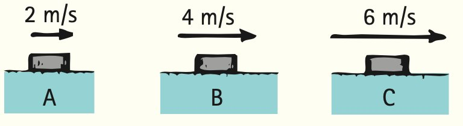
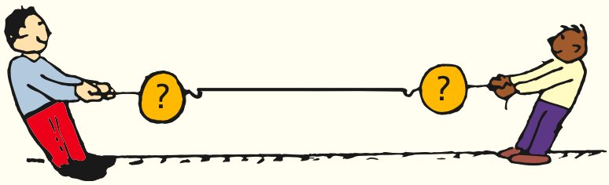
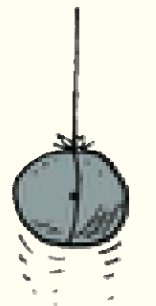
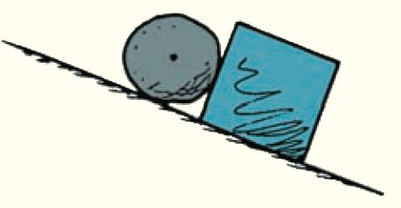
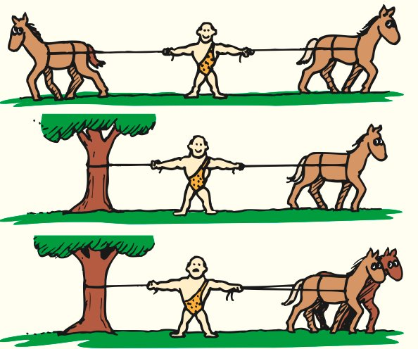

Summary of Terms (Knowledge)
- Newton’s third law
- Whenever one object exerts a force on a second object, the second object exerts an equal and opposite force on the first.
- Components
- Mutually perpendicular vectors, usually horizontal and vertical, whose vector sum is a given vector.
Reading Check Questions (Comprehension)
5.1 Forces and Interactions
- When you push against a wall with your fingers, they bend because they experience a force. Identify this force.
- A boxer can hit a heavy bag with great force. Why can’t he hit a piece of tissue paper in midair with the same amount of force?
- How many forces are required for an interaction?
5.2 Newton’s Third Law of Motion
- State Newton’s third law of motion.
- Consider hitting a baseball with a bat. If we call the force on the bat against the ball the action force, identify the reaction force.
- If the system of Figure 5.9 is only the orange, is there a net force on the system when the apple pulls?
- If the system is considered to be the apple and the orange together (Figure 5.10), is there a net force on the system when the apple pulls (ignoring friction with the floor)?
- To produce a net force on a system, must there be an externally applied net force?
- Consider the system of a single football. If you kick it, is there a net force to accelerate the system? If a friend kicks it at the same time with an equal and opposite force, is there a net force to accelerate the system?
5.3 Action and Reaction on Different Masses
- Earth pulls down on you with a gravitational force that you call your weight. Do you pull up on Earth with the same amount of force?
- If the forces that act on a cannonball and the recoiling cannon from which it is fired are equal in magnitude, why do the cannonball and cannon have very different accelerations?
- Identify the force that propels a rocket.
- How does a helicopter get its lifting force?
- Can you physically touch a person without that person touching you with the same amount of force?
5.4 Vectors and the Third Law
- What is meant by the term vector resolution?
- What happens to the magnitude of the normal vector on a block resting on an incline when the angle of the incline increases?
- How great is the force of friction acting on a shoe at rest on an incline compared with the resultant of the vectors mg and N?
- How does the magnitude of the vertical component of velocity for a ball tossed at an upward angle change as the ball travels upward? How about the horizontal component of velocity when air resistance is negligible?
5.5 Summary of Newton’s Three Laws
- Fill in the blanks: Newton’s first law is often called the law of ________; Newton’s second law is the law of ________; and Newton’s third law is the law of ________ and ________.
- Which of Newton’s three laws focuses on interactions?
Think and Do (Hands-On Application)
- Hold your hand like a flat wing outside the window of a moving automobile. Then slightly tilt the front edge upward and notice the lifting effect. Can you see Newton’s laws at work here?
- Try pushing your fingers together. Can you push harder on one finger than the other finger?
Plug and Chug (Equation Familiarization)
- Calculate the resultant of the pair of velocities 100 km/h north and 75 km/h south. Calculate the resultant if both of the velocities are directed northward.
- Calculate the magnitude of the resultant of a pair of 100-km/h velocity vectors that are at right angles to each other.
- Calculate the resultant of a horizontal vector with a magnitude of 4 units and a vertical vector with a magnitude of 3 units.
- What will be the speed of an airplane that normally flies at 200 km/h when it encounters a 80-km/h wind from the side (at a right angle to the airplane).
Resultant of two vectors at right angles to each other:
R = √(X2 + Y2)
Think and Solve (Mathematical Application)
- A boxer punches a sheet of paper in midair and brings it from rest up to a speed of 25 m/s in 0.05 s. (a) What acceleration is imparted to the paper? (b) If the mass of the paper is 0.003 kg, what force does the boxer exert on it? (c) How much force does the paper exert on the boxer?
- If you stand next to a wall on a frictionless skateboard and push the wall with a force of 40 N, how hard does the wall push on you? If your mass is 80 kg, show that your acceleration is 0.5 m/s2.
- Forces of 3.0 N and 4.0 N act at right angles on a block of mass 2.0 kg. Show that the acceleration of the block is 2.5 m/s2.
- When two identical air pucks with repelling magnets are held together on an air table and then released, they end up moving in opposite directions at the same speed, v. Assume the mass of one of the pucks is doubled and the procedure is repeated.
- From Newton’s third law, show that the final speed of the double-mass puck is half that of the single puck.
- Calculate the speed of the double-mass puck if the single puck moves away at 0.4 m/s.
Think and Rank (Analysis)
- A van exerts a force on trailers of different masses m. Compared with the force exerted on each trailer, rank the magnitudes of the forces each trailer exerts on the van. (Or are all pairs of forces equal in magnitude?)
- Each of these boxes is pulled by the same force F to the left. All boxes have the same mass and slide on a friction-free surface. Rank the following from greatest to least:
- The accelerations of the boxes
- The tensions in the ropes connected to the single boxes to the right in B and in C

- Three identical pucks, A, B, and C, are sliding across ice at the given speeds. The forces of air and ice friction are negligible.
- Rank the pucks by the force needed to keep them moving, from greatest to least.
- Rank the pucks by the force needed to stop them in the same time interval, from greatest to least.

Think and Explain (Synthesis)
- For each of the following interactions, identify action and reaction forces: (a) A hammer hits a nail. (b) Earth gravity pulls down on a book. (c) A helicopter blade pushes air downward.
- The photo shows Steve Hewitt and daughter Gretchen. Is Gretchen touching her dad, or is her dad touching her? Explain.
Think and Explain 35 image was omitted because no matching captured image was supplied.
- When you rub your hands together, can you push harder on one hand than the other?
- You hold an apple over your head. (a) Identify all the forces acting on the apple and their reaction forces. (b) When you drop the apple, identify all the forces acting on it as it falls and the corresponding reaction forces. Ignore air drag.
- Identify the action–reaction pairs of forces for the following situations: (a) You step off a curb. (b) You pat your tutor on the back. (c) A wave hits a rocky shore.
- Consider a baseball player batting a ball. Identify the action–reaction pairs (a) when the ball is being hit and (b) while the ball is in flight.
- What physics is involved for a passenger feeling pushed backward into the seat of an airplane when it accelerates along the runway during takeoff?
- If you drop a rubber ball on the floor, it bounces back up. What force acts on the ball to provide the bounce?
- Within a book on a table, there are billions of forces pushing and pulling on all the molecules. Why is it that these forces never by chance add up to a net force in one direction, causing the book to accelerate “spontaneously” across the table?
- If you exert a horizontal force of 200 N to slide a crate across a factory floor at constant velocity, how much friction is exerted by the floor on the crate? Is the force of friction equal and oppositely directed to your 200-N push? If the force of friction isn’t the reaction force to your push, what is?
- When the athlete holds the barbell overhead, the reaction force is the weight of the barbell on his hand. How does this force vary for the case in which the barbell is accelerated upward? Downward?

- Consider the two forces acting on the person who stands still—namely, the downward pull of gravity and the upward support of the floor. Are these forces equal and opposite? Do they form an action–reaction pair? Why or why not?

- Why can you exert greater force on the pedals of a bicycle if you pull up on the handlebars?
- Why does a rope climber pull downward on the rope to move upward?
- You push a heavy car by hand. The car, in turn, pushes back with an opposite but equal force on you. Doesn’t this mean that the forces cancel each other, making acceleration impossible? Why or why not?
- The strong man will push the two initially stationary freight cars of equal mass apart before he himself drops straight to the ground. Is it possible for him to give either of the cars a greater speed than the other? Why or why not?

- Suppose that two carts, one twice as massive as the other, fly apart when the compressed spring that joins them is released. What is the acceleration of the heavier cart relative to that of the lighter cart as they start to move apart?

- If a Mack truck and Honda Civic have a head-on collision, upon which vehicle is the impact force greater? Which vehicle experiences the greater deceleration? Explain your answers.
- Ken and Joanne are astronauts floating some distance apart in space. They are joined by a safety cord whose ends are tied around their waists. If Ken starts pulling on the cord, will he pull Joanne toward him, or will he pull himself toward Joanne, or will both astronauts move? Explain.
- Which team wins in a tug-of-war: the team that pulls harder on the rope or the team that pushes harder against the ground? Explain.
- In a tug-of-war between Sam and Maddy, each pulls on the rope with a force of 250 N. What is the tension in the rope? If both remain motionless, what horizontal force does each exert against the ground?
- Your instructor challenges you and your friend to each pull on a pair of scales attached to the ends of a horizontal rope, in tug-of-war fashion, so that the readings on the scales will differ. Can this be done? Explain.

- Two people of equal mass attempt a tug-of-war with a 12-m rope while standing on frictionless ice. When they pull on the rope, each of them slides toward the other. How do their accelerations compare, and how far does each person slide before they meet?
- What aspect of physics was not known by the writer of this newspaper editorial that ridiculed early experiments by Robert H. Goddard on rocket propulsion above Earth’s atmosphere? “Professor Goddard . . . does not know the relation of action to reaction, and of the need to have something better than a vacuum against which to react . . . he seems to lack the knowledge ladled out daily in high schools.”
- Why does vertically falling rain make slanted streaks on the side windows of a moving automobile? If the streaks make an angle of 45°, what does this tell you about the relative speeds of the car and the falling rain?
- A balloon floats motionless in the air. A balloonist begins climbing the supporting cable. In which direction does the balloon move as the balloonist climbs? Defend your answer.
- There are two interactions that involve a stone at rest on the ground. One is between the stone and Earth as a whole: Earth pulls down on the stone (mg) and the stone pulls up on Earth. What is the other interaction?
- A stone is shown at rest on the ground. (a) The vector shows the weight of the stone. Complete the vector diagram showing another vector that results in zero net force on the stone. (b) What is the conventional name of the vector you have drawn?

- A stone is suspended at rest by a string. (a) Draw force vectors for all the forces that act on the stone. (b) Should your vectors have a zero resultant? (c) Why or why not?

- The same stone is being accelerated vertically upward. (a) Draw force vectors to some suitable scale showing relative forces acting on the stone. (b) Which is the longer vector, and why?

- Suppose the string in the preceding exercise breaks and the stone slows in its upward motion. Draw a force vector diagram of the stone when it reaches the top of its path.
- What is the acceleration of the stone of the preceding question at the top of its path?
- Here the stone is sliding down a friction-free incline. (a) Identify the forces that act on it, and draw appropriate force vectors. (b) Use the parallelogram rule to construct the resultant force on the stone (carefully showing that it has a direction parallel to the incline—the same direction as the stone’s acceleration).

- The stone is at rest, interacting with both the surface of the incline and the block. (a) Identify all the forces that act on the stone, and draw appropriate force vectors. (b) Show that the net force on the stone is zero. (Hint 1: There are two normal forces on the stone. Hint 2: Be sure the vectors you draw are for forces that act on the stone, not by the stone on the surfaces.)

- In Figure 5.25 how does the magnitude of f relate to the vector sum of mg and N when the shoe is in equilibrium? What occurs if f is less than this sum?
- Refer to Monkey Mo in Figure 5.26. If the rope makes an angle of 45° with the vertical, how will the magnitudes of vectors S and mg compare?
- Refer to Monkey Mo in Figure 5.26. What will be the magnitude of vector S if the rope that supports Mo is vertical? If the rope were horizontal, how would vector S be different? Why can’t both vectors T and S be horizontal?
- A girl tosses a ball upward in Figure 5.27. If air drag is negligible, how does the horizontal component of velocity relate to Newton’s first law of motion?
- As a tossed ball sails through the air, a force of gravity mg acts on it. Identify the reaction to this force. Also identify the acceleration of the ball along its path, even at the top of its path.
Think and Discuss (Evaluation)
- A rocket becomes progressively easier to accelerate as it travels through space. Discuss why is this so. (Hint: About 90% of the mass of a newly launched rocket is fuel.)
- When you kick a football, what action and reaction forces are involved? Which force, if either, is greater?
- Is it true that when you drop from a branch to the ground below, you pull upward on Earth? If so, then why isn’t the acceleration of Earth noticed?
- Two 100-N weights are attached to a spring scale as shown. Does the scale read 0, 100 N, or 200 N, or does it give some other reading? (Hint: Would the reading be different if one of the ropes were tied to the wall instead of to the hanging 100-N weight?)

- Does a baseball bat slow down when it hits a ball? Discuss and defend your answer.
- A baseball bat is swung against a baseball, which accelerates. When the ball is caught, what produces the force on the player’s glove?
- A farmer urges his horse to pull a wagon. The horse refuses, saying that to try would be futile because it would flout Newton’s third law. The horse concludes that she can’t exert a greater force on the wagon than the wagon exerts on her and, therefore, that she won’t be able to accelerate the wagon. Discuss your reasoning to convince the horse to pull.
- The strong man can withstand the tension force exerted by the two horses pulling in opposite directions. How would the tension compare if only one horse pulled and the left rope were tied to a tree? How would the tension compare if the two horses pulled in the same direction, with the left rope tied to the tree?
